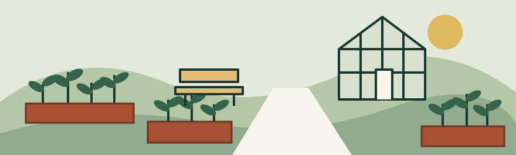

Common Ground
Community field guide / Autumn 2026
A place to grow.
A place to belong.
Good things happen when we make a little room for one another. Come for a quiet hour, a shared meal or something new to learn.

Find your starting point
Grow something
A few seeds. A pair of hands. A garden we tend together.
Share a table
Pull up a chair for conversation and a warm bowl of soup.
Make it last
Swap a skill, mend a favorite thing or try a small project.
Every visit starts with hello
All sessions are free. No membership, equipment or experience is needed. Come on your own or bring someone with you.
Your next Saturday
Make room for a good day.
Stay for one session or linger a little longer. You decide how to take part.
| Program | When | What to expect |
|---|---|---|
| Garden together | Saturdays, 10–11:30 am | Plant, water or harvest. Seated tasks are available. |
| The shared table | Saturdays, noon–1 pm | Bring your lunch or share the seasonal soup. Ingredients are listed. |
| Make & mend | First Saturday, 2–3:30 pm | Bring a small repair or try a simple craft. Materials are provided. |
Plan a comfortable visit
An easy arrival
- Enter through the wide gate beside the greenhouse.
- The main path is firm and level. Seating is available along the way.
- A welcome volunteer can show you the garden and the accessible restroom.
Choose your pace
- Take part seated or standing, or simply watch.
- Use the quiet corner whenever you would like a break.
- Ask for written instructions or a demonstration. Both are welcome.
A small first step is enough
You do not have to know anyone, know what to say or stay all day. There is a place for you here.
About this guide
Common Ground and its programs are fictional. This sample shows how a thoughtfully designed document can carry its structure into PDF and HTML.